QUY TRÌNH NGHIÊN CỨU
Vị trí đề xuất: Chương 1. Quy trình nghiên cứu của đề tài, phân biệt kết quả đã triển khai và phần dự kiến.
SVG · PNG 300 dpi · Mermaid
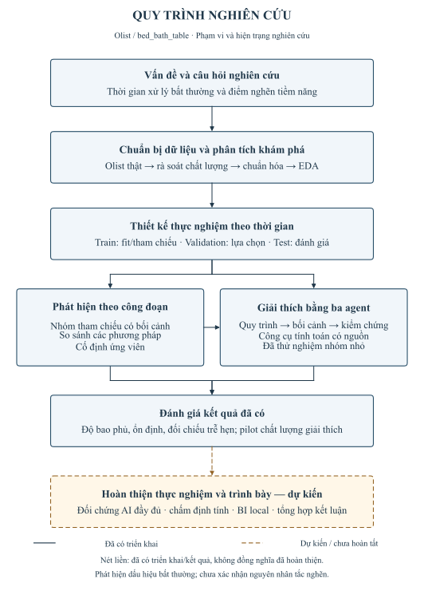
KHUNG KHÁI NIỆM CỦA NGHIÊN CỨU
Vị trí đề xuất: Chương 2. Khung khái niệm liên kết biểu diễn quy trình, phát hiện bất thường, Multi-Agent và BI.
SVG · PNG 300 dpi · Mermaid
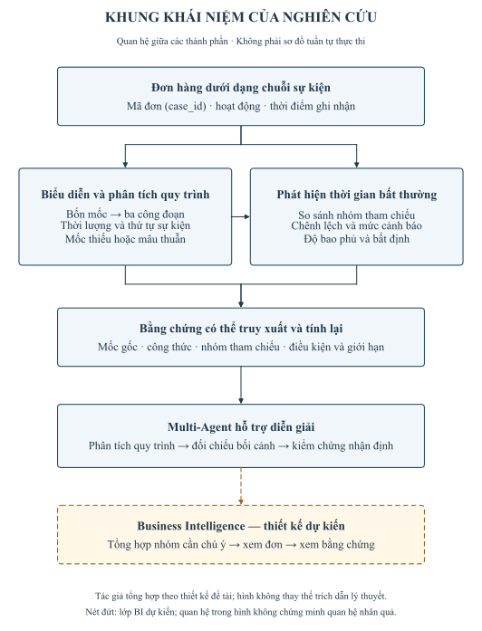
QUAN HỆ DỮ LIỆU OLIST
Vị trí đề xuất: Chương 3. Quan hệ giữa chín bảng nguồn Olist và lớp tham chiếu địa lý dẫn xuất.
SVG · PNG 300 dpi · Mermaid
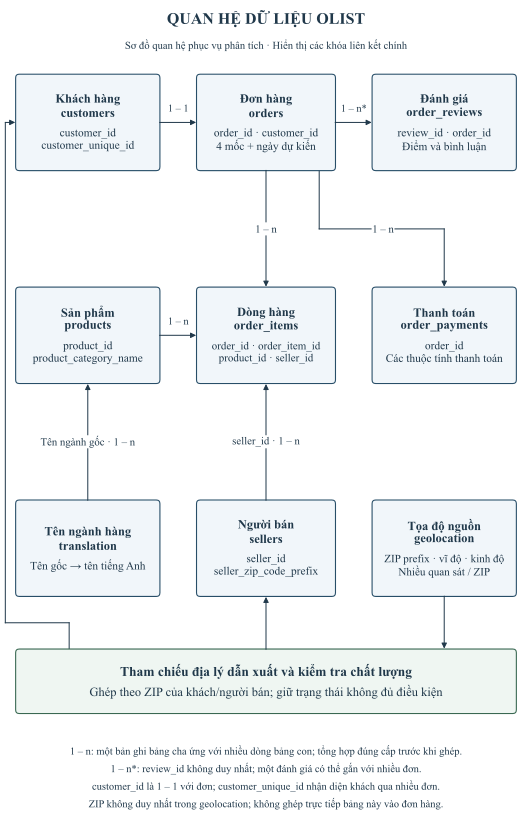
BỐN MỐC SỰ KIỆN VÀ BA CÔNG ĐOẠN
Vị trí đề xuất: Chương 3. Ánh xạ bốn mốc Olist thành ba công đoạn; ngày giao dự kiến được đối chiếu độc lập.
SVG · PNG 300 dpi · Mermaid
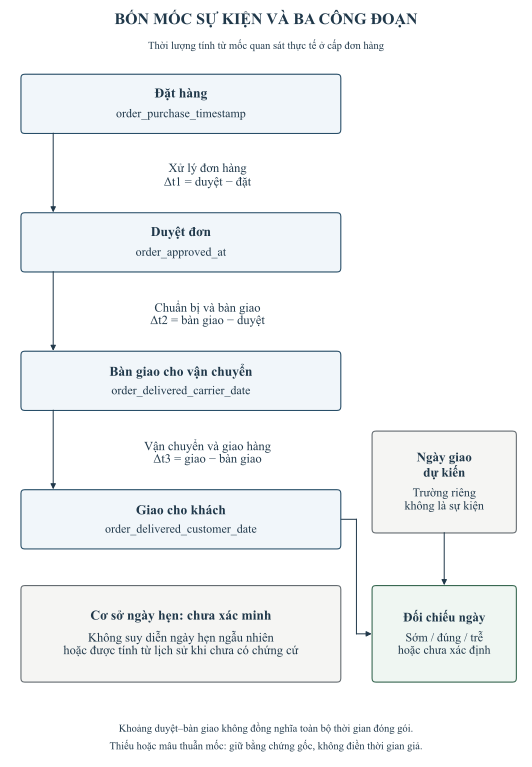
CHUẨN BỊ DỮ LIỆU VÀ CHIA TẬP
Vị trí đề xuất: Chương 3. Luồng chuẩn hóa, kiểm tra chất lượng, chọn phạm vi ngành hàng và phân chia theo thời gian.
SVG · PNG 300 dpi · Mermaid
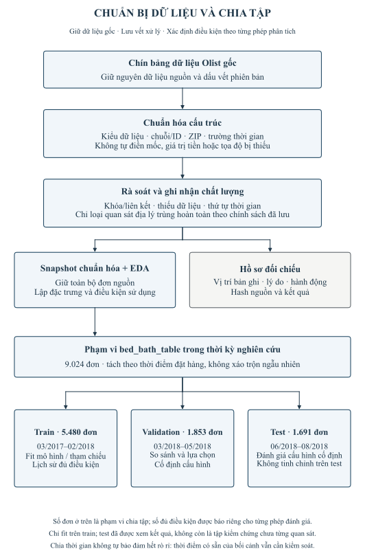
THAM CHIẾU VÀ CẢNH BÁO CÔNG ĐOẠN
Vị trí đề xuất: Chương 3. Lựa chọn nhóm tham chiếu, tính chênh lệch và điểm; tách biệt điều kiện đánh giá với trễ hẹn.
SVG · PNG 300 dpi · Mermaid
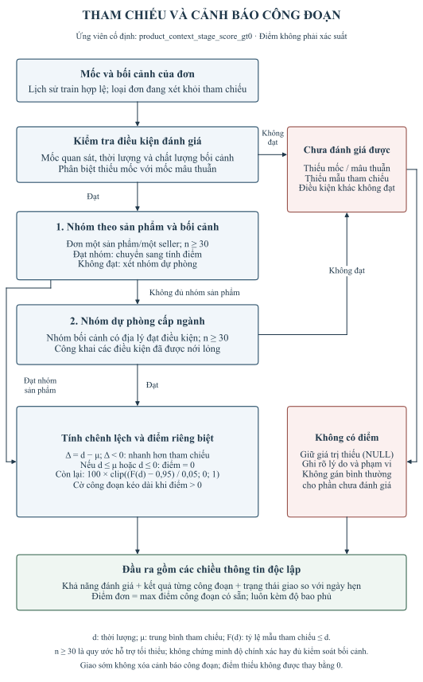
KIẾN TRÚC HỆ THỐNG PHÂN TÍCH
Vị trí đề xuất: Chương 4. Kiến trúc các thành phần đã triển khai và lớp BI local dự kiến.
SVG · PNG 300 dpi · Mermaid
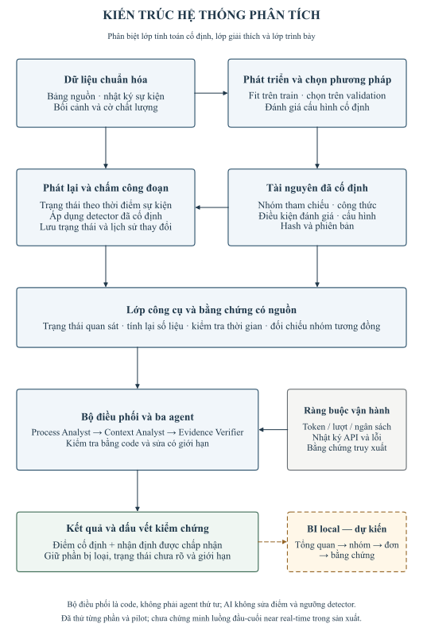
PHỐI HỢP BA AGENT VÀ KIỂM CHỨNG ĐẦU RA
Vị trí đề xuất: Chương 4. Luồng ba agent với kiểm tra bằng code, vòng sửa nhận định và vòng bổ sung cảnh báo bị bỏ sót.
SVG · PNG 300 dpi · Mermaid
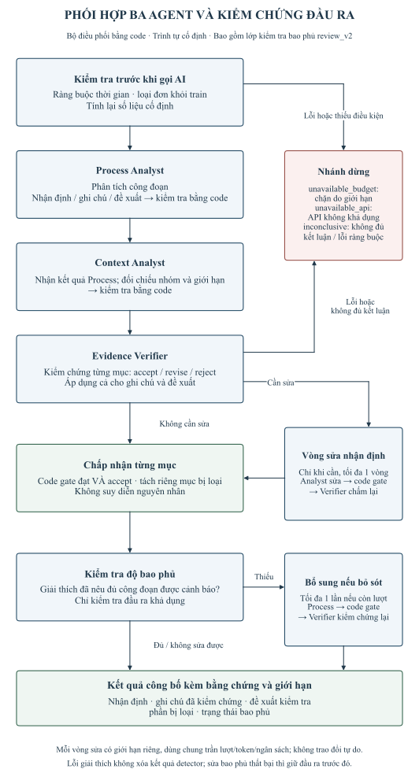
PHÁT LẠI SỰ KIỆN VÀ CHẤM CÔNG ĐOẠN
Vị trí đề xuất: Chương 4. Phát lại sự kiện lịch sử với hai kịch bản về thời điểm có sẵn của thông tin bối cảnh.
SVG · PNG 300 dpi · Mermaid
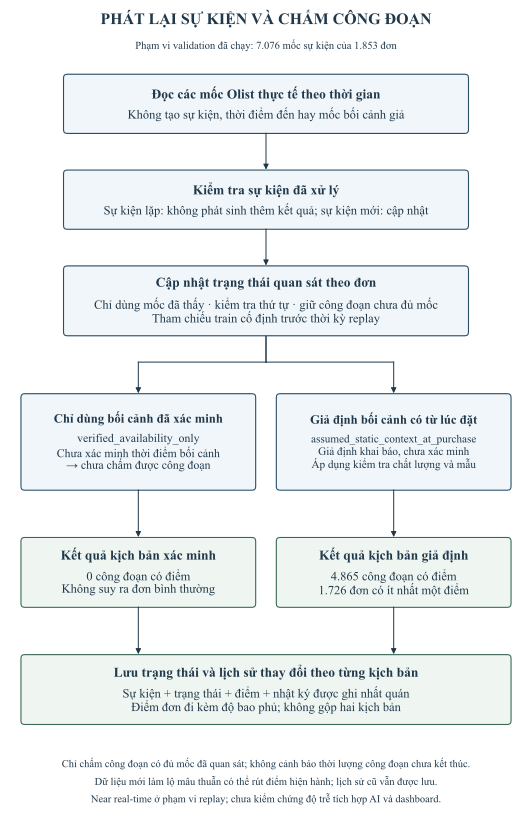
LUỒNG KHAI THÁC BI — THIẾT KẾ DỰ KIẾN
Vị trí đề xuất: Chương 4. Thiết kế luồng BI từ tổng quan đến nhóm, đơn hàng và bằng chứng phục vụ kiểm tra.
SVG · PNG 300 dpi · Mermaid
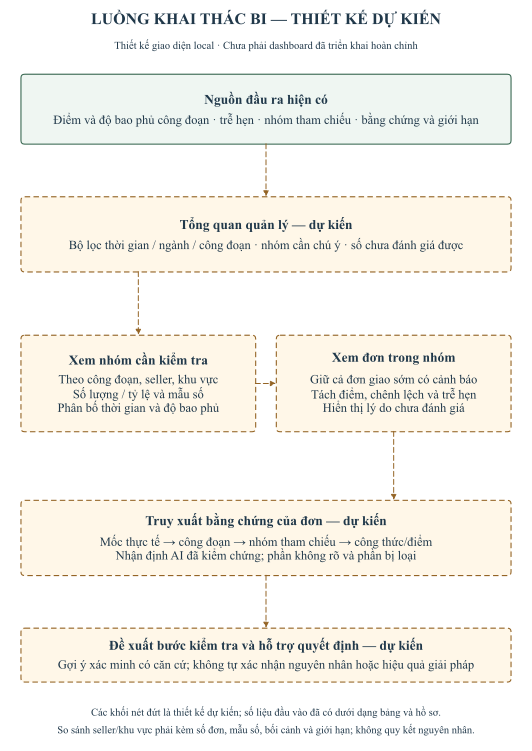
THIẾT KẾ THỰC NGHIỆM VÀ ĐÁNH GIÁ
Vị trí đề xuất: Chương 5. Hai nhánh đánh giá phương pháp phát hiện và đóng góp của Multi-Agent, với giới hạn của từng loại bằng chứng.
SVG · PNG 300 dpi · Mermaid
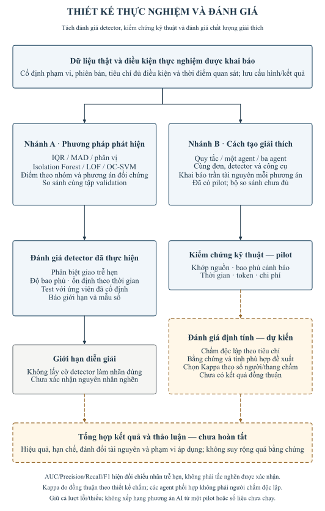